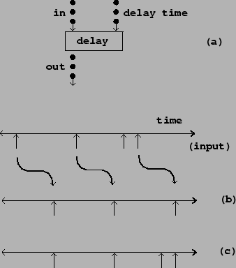
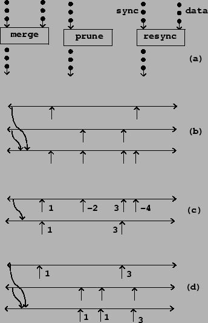

So far we've discussed how to convert between control streams and audio streams. In addition to this possibility, there are four types of operations you can perform on control streams to get other control streams. These control stream operations have no corresponding operations on audio signals. Their existence explains in large part why it is useful to introduce a whole control structure in parallel with that of audio signals.
The first type consists of delay operations, which offset the time values associated with a control stream. In real-time systems the delays can't be negative in value. A control stream may be delayed by a constant amount, or alternatively, you can delay each event separately by different amounts.
Two different types of delay are used in practice: simple and compound. Examples of each are shown in Figure 3.10. A simple delay acting on a control stream schedules each event, as it comes in, for a time in the future. However, if another event arrives at the input before the first event is output, the first event is forgotten in favor of the second. In a compound delay, each event at the input produces an output, even if other inputs arrive before the output appears.
|  |
A second operation on control steams is merging: taking two control streams and combining all the events into a new one. Figure 3.11 (part a) shows how this and the remaining operations are represented in block diagrams.
Part (b) of the figure shows the effect of merging two streams. Streams may contain more than one event at the same time. If two streams to be merged contain events at the same time, the merged stream contains them both, in a well-defined order.
A third type of operation on control streams is pruning. Pruning a control stream means looking at the associated data and letting only certain elements through. Part (c) shows an example, in which events (which each have an associated number) are passed through only if the number is positive.
|  |
Finally, there is the concept of resynchronizing one control stream to another, as shown in part (d). Here one control stream (the source) contributes values which are put onto the time sequence of a second one (the sync). The value given the output is always the most recent one from the source stream. Note that any event from the source may appear more than once (as suggested in the figure), or, on the other hand, it might not appear at all.
Again, we have to consider what happens when the two streams each contain an event at the same time. Should the sync even be considered as happening before the source (so that the output gets the value of the previous source event)? Or should the source event be considered as being first so that its value goes to the output at the same time? How this should be disambiguated is a design question, to which various software environments take various approaches. (In Pd it is controlled explicitly by the user.)